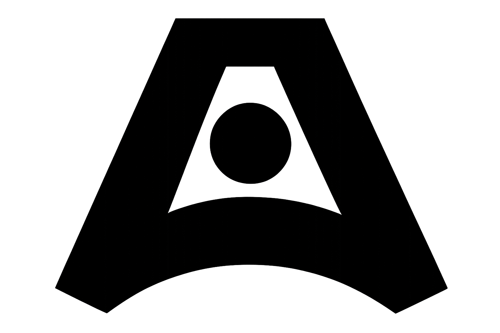

Angelina Novruzova
Portfolio

About
Cute co-op game where you and your friend play as adorable witch cats to make potions on time! This project originally began as a game jam, where we won the award for Best Gameplay Mechanics. We are now working on it together with the goal of releasing it on Steam, and the demo is planned for Steam Next Fest 2026.

About
At Grendel Games, I contributed as a level designer for a serious game aimed at training laparoscopic skills for surgeons. My main responsibility was developing levels that were both engaging and medically accurate, ensuring they aligned with the real-world movements and actions surgeons perform. I actively participated in testing and refinement, working closely with surgeons who partnered with Grendel Games.

About
Shadows of Singraven is a horror experience in which you play as the last Dutch witch hunter, called to investigate a haunted manor and its terrifying ghost nun. This project was my graduation internship, during which I was responsible for project management and for leading a team of talented artists and programmers. I was also responsible for the narrative and quest design. The project began as a start-up by Leave.Your.Mark Company and has now received funding. Its mission and vision are to revive Twents folklore, drawing from Dutch history and mythology to raise awareness. The game is a semi-open-world horror experience featuring puzzles and maze-like structures.

About
Code: Rose is a chilling mystery set around a murder in a quiet church, with strange clues and a shadowy figure dressed in 19th-century clothing.

About
Stolen Worlds is a personal research project exploring souls-like quest and map methodology. The project focuses on researching how to build interesting and fun quests and narrative around vertical structures and looping map paths.

About
Ant Troubles is a minimalist hyper-casual game made for a two-day game jam. The player takes control of an ant whose goal is to bring food back home while overcoming obstacles along the way. Created around the theme “Out of Options,” the game won the jam.

About Me
Hi! I'm Angelina Novruzova, a Game Designer based in the Netherlands. I have experience in level, puzzle, and narrative design, with I’ve worked on a range of group projects to create fun, distinctive games, while also developing my skills through solo work. I have experience in leading teams, collaborating closely with designers and artists to create engaging and polished gameplay. My work spans both entertainment games and serious games. I’m available for new opportunities and open to relocation.
My Side Quests
Writing stories is a part of my life and my soul. In my free time, In my spare time I write novels. I’m also a Dungeon Master, and my friends and I have been playing our campaign together for over four years! I write one-shots for newcomers who want to try D&D but aren’t sure where to start. For my games, I mostly draw maps and worlds or make them physically. Likewise, I craft custom handmade dnd dice from epoxy resine and make fantasy folklore plushies out of polimer clay.
Technical Skills
Unreal Engine

ArcWeave and Twine

Creative and Technical Writing
Game Design & Balancing
Exel and Microsoft Office Products
Testing
Download Designer Resume Download Producer Resume
Contact Me
angelina.novruzova at protonmail.com
Enschede, NL
Contact me by email